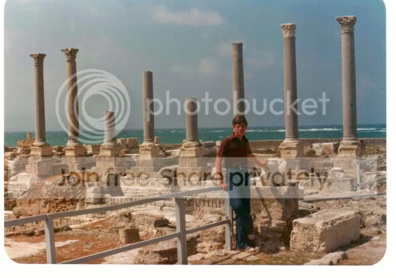

Я уходил, исполнен веры,
Как лучник опытный на лов,
Мне снились тирские гетеры
И сонм сидонских мудрецов
В.Брюсов «Блудный сын»
Но вы, как дым, надвинулись, виденья,
туманом мне застлавши кругозор.
Гете «Фауст» (Пер. Б.Пастернака)
Стиль заметок, о котором я объявил в самом их начале, можно определить как «Материалы к…». Он предполагает скрупулезное цитирование первоисточников на языке оригинала с указанием, по возможности, ссылок, определенную сухость изложения. Но когда приходится писать о вещах, связанных с прошедшей жизнью, к которым ты прикасался руками или с которыми связаны незабываемые моменты прошлого – возникает соблазн отказаться от наложенных самоограничений и дать волю чувствам.
Вот и сейчас, когда пора уже переходить к финикийским страницам своих заметок, в памяти всплывают незабываемые годы, проведенные на бывшей земле Ханаанской. Годы счастливого открытия этой прекрасной страны, и годы ужасной войны, в ходе которой пролилось очень много крови.
…Весь опыт моей жизни научил меня ненавидеть войну. Разве можно забыть, как от взрыва ракеты, прилетевшей с иранской стороны, погиб иракский ребенок, воспитанник багдадской музыкальной школы, игру которого на скрипке мы с женой слушали с восхищением накануне вечером… Тем более не могу принять войну гражданскую. Несколько лет в условиях такой войны в Ливане оставили незаживающие душевные раны. И хотя в молодости все воспринимается легче и веселей, хотя приобретается бесценный жизненный опыт, который сводится не только к умению определять по звуку, «своя» ракета летит ( о этих ракетах мы говорили «Бон вояж!») или чужая («Ахлян ва сахлян» - «Добро пожаловать!»), но и учит разбираться в тонкостях души человеческой, которые могут быть замечены только в таких экстремальных условиях, – все же из памяти никогда не изгладятся глаза заложников, которых только что захватили посреди улицы и судьба которых почти наверняка печальна.
Война на Ливанской земле не пощадила ничего: ни людей, ни памятники. На моих глазах за несколько недель с раскопок, покинутых из-за войны археологами и охраной, любители сувениров и просто любопытные растащили по кусочкам уже почти полностью раскопанный мозаичный пол виллы знатного вельможи на берегу моря где-то между Сайдой и Тиром (так уж сложилось, что древний Сидон мы называли Сайдой, по его нынешнему ливанскому названию, а сегодняшее название Сур к Тиру не прилепилось). И еще одно свидетельство прошлого кануло в небытие.
Глядя на фото своего сына на фоне развалин древнего Тира, вспоминаю, что на этой земле любая пригоршня песка таила в себе следы былых цивилизаций. Приятель сына, начинающий нумизмат, пока мы, спасаясь от летней жары, плескались в море, успевал найти в пляжных отвалах несколько античных монет. Стоило ему пошевелить пальцем по сползающему со склона песку – и открывались покрытые зеленой окисью монеты неизвестно какой давности. Такую «плодородную» почву я встречал только в долинах и курганах Месопотамии.

Однажды, в те далекие уже дни, мы сидели в кафе на центральной улице Бейрута Аль-Хамра за чашкой крепчайшего кофе с одним известным в Ливане человеком, членом влиятельного семейства Акль, давшего много замечательных деятелей ливанской культуры, и рассуждали о судьбе картин одного из представителей этого семейства, знаменитого художника, дом которого был разрушен снарядом. Речь сама собой пошла о причинах, породивших братоубийственную гражданскую войну в Ливане. Уже завершая разговор, мой собеседник сказал: «А главная причина в том, что арабы сношаются друг с другом по всему миру, а рожать приезжают в Ливан». (Сказано это было крепче, «перевод» фразы с использованием «нормативной» лексики лишает ее глубинного содержания. Но не могу использовать лексику ненормативную, так как не вижу перед собой собеседника. А если эти строчки читают не мужики, которые «проспиртованы и растатуированы на кораблях», говоря словами анархиста из известной трагедии, а женщина, или, не приведи господь, невинный ребенок?.. Нет, здесь я не союзник тем извозчикам, которые рассыпают мат налево и направо, перемещаясь по ухабам Сети). Может это главная причина, а может и нет… Это понимал, видимо, и мой собеседник. Однако оправдать войну не могут никакие причины. Это знают все умные люди. Но дело, видите ли, в том, что их на Земле становится все меньше и меньше. Ведь в войнах погибают лучшие…